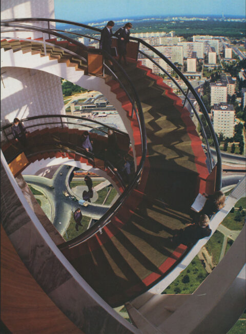
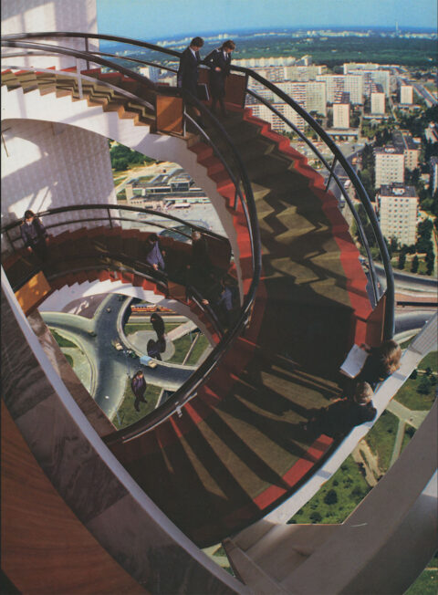

TAMARA
STOFFERS
Kompromat (het;o) gevoelige informatie die gebruikt kan worden om druk uit te oefenen. In deze expositie toont Tamara Stoffers (Zwolle, 1996) de vruchten van haar langdurige fascinatie met de beeldtaal van de Sovjet-Unie. Zo maakt ze analoge collages opgebouwd met afbeeldingen uit Sovjet-publicaties, schildert ze socialistisch realistische taferelen en onderzoekt ze de fijne lijn tussen propaganda en kitsch binnen haar sculpturen.
Inmiddels sleept de oorlog in Oekraïne zich al drie jaar voort. Ook Tamara is overweldigd door de nieuwe
politieke context die opeens een overheersende bijsmaak heeft gegeven aan de beelden die als basis
dienen voor haar werk. Binnen de expositie wil ze de bezoeker confronteren met de vraag die zij ook
zichzelf heeft gesteld; wat te doen wanneer er nieuwe interpretaties worden gegeven aan een beeldtaal
door heersende politieke spelers? Kan een kunstenaar de autonome kracht van deze beelden herstellen?
Gedurende de expositieperiode zullen er manifestaties plaatsvinden die ingaan op het enerzijds politieke
en anderzijds autonome karakter van de kunst.
 
